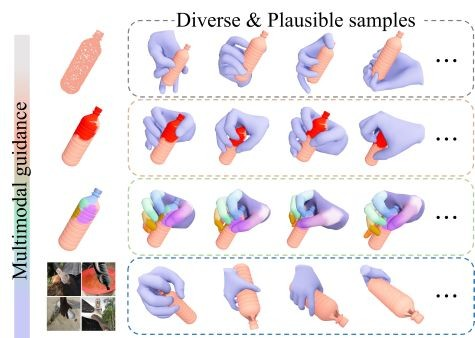
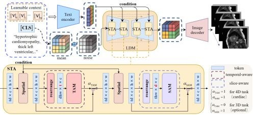

Synthesizing Expressive Human-Object Interactions via Test-time Latent Adaptation
ACCV 2026 · Accepted
Test-time latent adaptation brings probing, adjustment, and recovery to physics-based human–object interaction.
Research by topic
From digital humans and garments to interactive scenes and embodied intelligence.
10 works · * Equal contribution. Journal years follow the final volume; earlier online publication is noted.
ACCV 2026 · Accepted
Test-time latent adaptation brings probing, adjustment, and recovery to physics-based human–object interaction.
CVPR 2026
Part-aware grasp tokenization and masked modeling for controllable, semantically consistent dexterous grasp synthesis.
IEEE TIE 2026 · 73(8), 11835–11847
Functional part alignment and safety-aware grasp generation for human-to-robot object handovers.
IEEE TVCG 2026 · 32(2), 2340–2353 · Early access 2025
A diffusion-based garment prior and Fourier spherical representation recover temporally coherent dynamic garments from monocular video.
ACM TOMM 2025
Language-guided human and clothing motion generation, combining structured text prompts with physical constraints and learned motion priors.

IEEE TVCG 2025 · 31(9), 5642–5654 · Early access 2024
Multimodal guided diffusion synthesizes diverse, plausible hand–object grasps from geometry, contact affordances, and images.

ACCV 2024
Text-guided generation of disease-aware 4D cardiac cine MRI with aligned semantic features and spatiotemporal consistency.
Graphical Models 2023 · 127, 101178 · Co-first author
A markerless multi-view capture system and dataset for reconstructing hand interactions with deformable objects.
CICAI 2022
Hardware-triggered camera synchronization supports high-speed multi-view acquisition and real-time 3D hand pose estimation.
ICAA 2021
Structured-light-assisted region-of-interest extraction for weld seam recognition on large spherical tanks.
No matching works. Try a different keyword or filter.